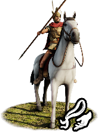
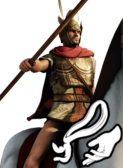

Messapian Lancer Cavalry


Class: heavy · Category: cavalry · Men per unit: 30
Description
Draped in noble cloaks which undulate in the wind as they charge, these courageous horsemen are the shock arm of the Messapian nobility. They function as the hammer of their army, dedicated to break through enemy lines with ferocious frontal attacks. Emulating the heroic cavalry ethos celebrated across southern Italy, these noble warriors ride without shields so that they may wield a heavy lance with both hands, which they use to devastating effect when charging furiously against opposing cavalry and infantry units. They are best deployed when manoeuvring rapidly around the flank or rear of the enemy to exploit gaps in their lines and deliver the decisive blow that will win them the battle. In melee, they draw their swords: curved machairai or straight xiphoi. These men are heavily armoured, wearing Oscan-style armour, such as kardiophylakes (i.e. pectoral cuirasses), triple-disc cuirasses, or composite linothorakes, paired with bronze greaves and crested Apulo-Corinthian, Pilos, Montefortino, or Samno-Attic helmets adorned with feathers.
Historical background
Across southern Italy and Apulia, the native aristocracy idealized themselves as heroic mounted warriors, an ethos prominently displayed on red-figure vases and polychrome funerary terracottas depicting armoured cavalrymen engaged in heroic combat (Burns, The Cultural and Military Significance (2005), pp. 91–93, 187–189; Van der Wielen-van Ommeren, 'Terres cuites dauniennes', in: Genava 53 (2005), pp. 65–75). Polychrome volute kraters (a type of Greek-style large two-handled vase) and terracotta figures from Arpi and Canosa depict heavily armoured South Italic riders charging with lances and swords while wearing anatomical cuirasses, crested helmets, and two-panelled flying cloaks or chlamydes (Van der Wielen-van Ommeren (2005), pp. 70–72, figs. 4–10).
This specialized shock role reflects the Messapians’ being influenced by broader Hellenistic tactical doctrine and martial inspiration from the Macedonian dynastic world, in which dedicated heavy cavalry lancers delivered concentrated frontal impact against opposing formations (Yntema (2017), p. 359; Garlan, s.v. 'War and siegecraft', in: The Cambridge Ancient History VII.1 (2006), pp. 353–356; Walbank, s.v. 'Monarchies and monarchic ideas', in: The Cambridge Ancient History VII.1 (2006), pp. 62–67). In southern Italy, this shock technique was well demonstrated at the Battle of Heraclea (280 BC), in which the allied South Italic cavalry captain Oplax (also recorded as Oblacus Vulsinus), a Frentanian cavalry commander, charged directly into Pyrrhos: "And having cut through the dense mass of the surrounding horsemen, he rushed against the king himself, holding his spear with both hands, driving his lance through Pyrrhos's horse before being overwhelmed by his companions" (Dion. Hal. Ant. Rom. 19.12; Plut. Pyrrh. 16.8–10). At Ausculum in 279 BC, Pyrrhos similarly deployed his heavy cavalry on the open plain alongside his royal guard to penetrate the Roman infantry lines after early fighting in wooded country had impeded mounted operations. This was eventually successful when Pyrrhos himself, with his cavalry and elephants, “penetrated the front of the third and fourth legions who were fighting in the centre and decided the outcome of the battle in his own favour” (Franke, s.v. 'Pyrrhus', in: The Cambridge Ancient History VII.2 (2006), p. 472–473).
Following the Roman victory in the Pyrrhic War and their subsequent subjugation of the Messapians in 266 BC (Fasti Triumphales Capitolini, II, XX; Staveley, s.v. 'Rome and Italy in the early third century', in: The Cambridge Ancient History VII.2 (2006), p. 431), these noblemen then formed the personal followings of pro-Roman native leaders (Yntema, 'The Pre-Roman Peoples of Apulia (1000‒100 BC)', in: Farney and Bradley (eds.), The Peoples of Ancient Italy (2017), pp. 358–363). An example of this phenomenon is the south Apulian clan of the Thaotoridas (their name was derived from the Messapian divinity Thaotor, Latinized as Statorius), whose heir Quintus Statorius became one of the most trusted military lieutenants of the Scipio brothers in Spain, being dispatched in 213 BC to train the Numidian infantry of King Syphax (Liv. 24.48; Yntema (2017), p. 363). Another relative, Gaius Statorius, achieved such high standing that he was honoured with a proxeny at Delphi in 191 BC while serving on the staff of consul Acilius Glabrio at Thermopylae (Yntema (2017), p. 363).
However, this elite equestrian class increasingly diverged from the common populace; as Yntema highlights, during the restive period of 186–181 BC, widespread rural discontent erupted into "herdsmen's conspiracies" and peasant uprisings that required Roman praetors to suppress because "the elite had totally lost its grip on their restive clansmen" (Yntema (2017), p. 362; Liv. 39.29, 40.19). Through long service alongside Roman armies across Spain, Greece, and North Africa, the Messapian nobility adopted Latin norms and values, culminating in them being given full Roman citizenship under the Lex Plautia Papiria in 89 BC (Yntema (2017), pp. 363–364).
Stats
| Rank in roster | ||
|---|---|---|
| Men per unit | 30 | █········· 8% |
| Attack | 11 | ███······· 34% |
| Charge bonus | 27 | ████████·· 83% |
| Defence | 30 | ████······ 43% |
| · armour | 11 | ██████···· 64% |
| · defence skill | 19 | ████······ 44% |
| · shield | 0 | █········· 0% |
| Morale | 11 | ████······ 39% |
| Discipline | Impetuous (may charge without orders) | |
| Training | Trained | |
| Recruitment cost | 2,060 dn | █████····· 52% |
| Upkeep per turn | 830 dn | ████████·· 80% |
| Turns to recruit | 3 |
Weapons
| Primary | Secondary | Primary | Secondary | Primary | Secondary | Primary | Secondary | ||||
|---|---|---|---|---|---|---|---|---|---|---|---|
| Attack | 11 | 10 | Charge bonus | 27 | 19 | Type | melee · blade | melee · blade | Damage | piercing | piercing |
Defence
| Primary | Secondary | Primary | Secondary | Primary | Secondary | Primary | Secondary | ||||
|---|---|---|---|---|---|---|---|---|---|---|---|
| Total | 30 | — | Armour | 11 | — | Defence skill | 19 | — | Shield | 0 | — |
Condition and terrain
| Hit points | 1 | Modifier against mounts | horse -3 · chariot -3 · camel -3 | Charge distance | 40 | Formations | Square · Wedge |
| Mount | lancer horse | Ground: scrub / sand / forest / snow | -3 / -1 / -8 / -1 |
Technical stats
| Time between blows (primary / secondary) | 2.5 s / 2.5 s | Extra fatigue in hot climates | 3 | Spacing between men: close / loose | 2 × 4.8 m / 3 × 7.2 m | Default ranks | 5 |
In battle: Good stamina
Who can recruit it
A core roster unit for one faction, which can raise it anywhere it holds the right building:
Any faction holding one of the provinces below can field it.
Exactly what a settlement must have, route by route (3)
| For | Building | Also requires | For | Building | Also requires | For | Building | Also requires | |||
|---|---|---|---|---|---|---|---|---|---|---|---|
| Messapians | Direct Rule | Tier 2 Military Industrial Complex · Tier 2 Colony | Messapians | Homeland | Garrison Building or Tier 1 Military Industrial Complex | Every faction except Messapians (area-of-recruitment unit) | Any settlement | Tier 2 Military Industrial Complex · Messapian area of recruitment · Dependency or Indirect Rule · Tier 1 Colony not built |
Areas of recruitment

| Zone | Provinces | ||||||
|---|---|---|---|---|---|---|---|
| Messapian | 5 |